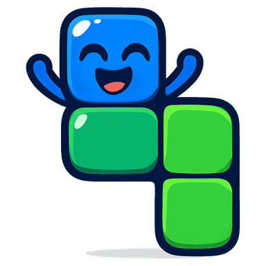

Building today’s boards…
Coins buy blocks, backgrounds and half the board frames. The other half are Diamond prizes and are never for sale, at any price. Stars are your score and are never spent.
Pick the rules and how hard it is, then send the board to a friend. They play it free. You get their time back.
The whole game, in the order you meet it. Tap anything to open it.
Update
Today’s board
New rule

You did it!
Welcome back
Day 1
Paused
0.0s
The clock is stopped, and the board is waiting.
That was the demo
Free, and your progress starts fresh on the app.
Get it free on Google PlayFrom a friend
Ad